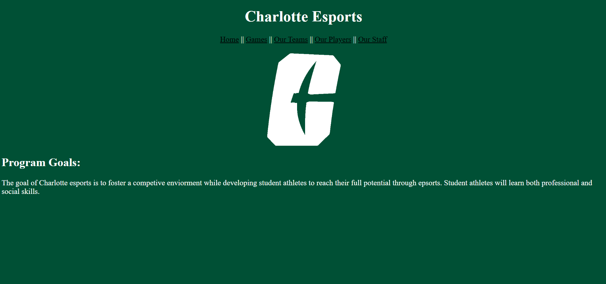

Peer Review: Korenstein, Stephen

Charlotte Esports
- Homepage - Project starts with index.html inside of the project folder.
- Spaces / upper-cases in file / folder names - No spaces or uppercase.
- Design
- Contrast/sizing - Text contrasts well against background.
- Color and font using CSS - Project correctly uses .css file.
- CRAP:
- Contrast - The webpage uses a dark green background with white text, which provides strong contrast and aids in readability
- Repetition - The consistent use of green and white throughout the pages provides a cohesive look.
- Alignment - The placement of elements has a symmetrical balance, which is visually pleasing.
- Proximity - The elements are spaced well, with clear distinctions between different sections.
- Page Has:
- Header - All pages include a header element within the body.
- Main - All pages include a main element within the body.
- Footer - All pages include a footer element within the body.
- Nav - All pages include working nav bar with adequate spacing between links.
- Header with site/brand and h1 - All pages have a h1 element, and h1 in the header.
- Main with h2 - Main includes h2 element.
- Footer with user pages - No Footer with links.
- Specific requirements:
- The page creates spearte js scripts and css files.
- Page has minimum of 5 pages.
- All pages have a working nav bar.
- Reccomendations:
- I would just add a bit more content on the other pages. It is a little plain.